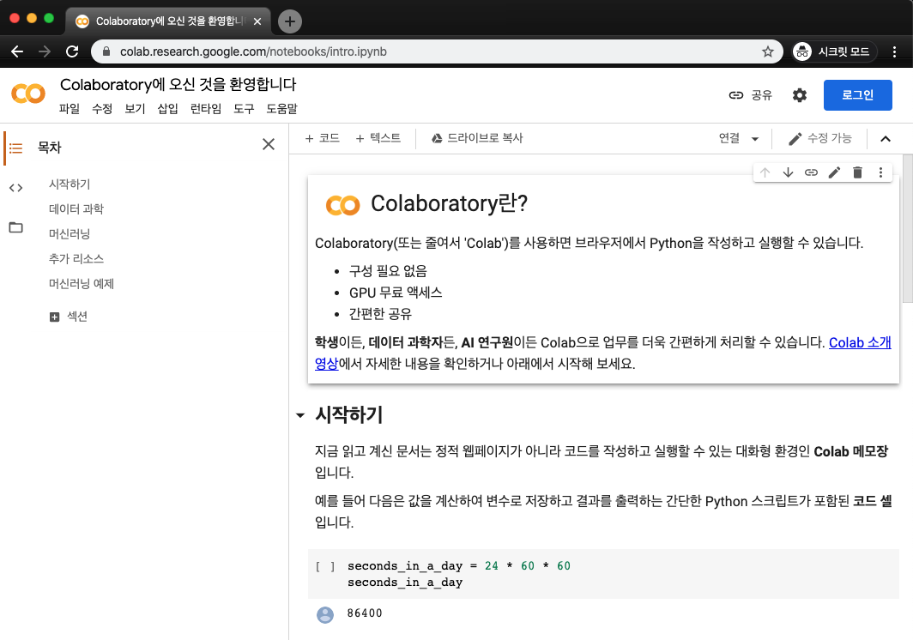
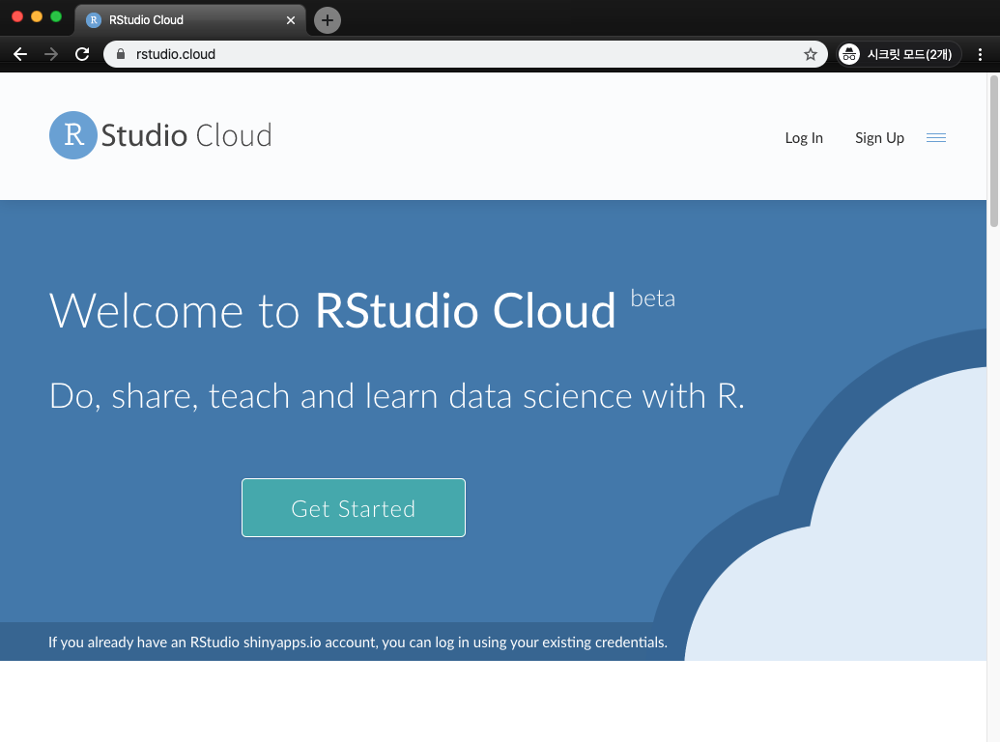
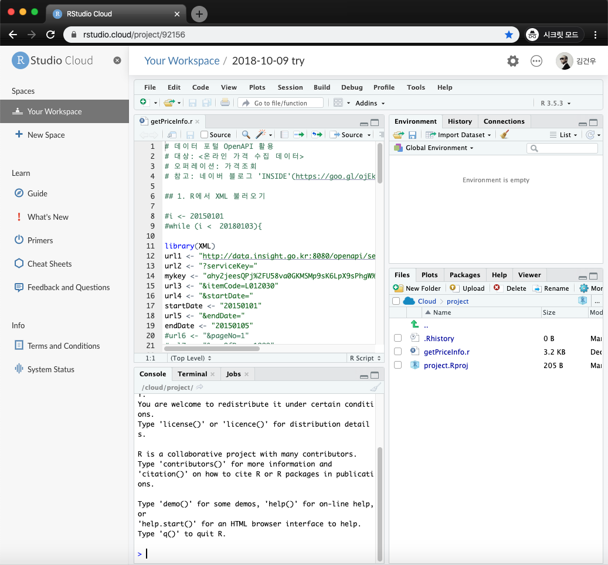

코딩이 워드나 엑셀처럼 기본 소양이 되고 있는 시대다. 특히, 데이터의 중요성이 강조되면서 파이썬이나 R에 대한 관심이 높아지고 있다. 너도나도 코딩을 외치니 무엇인지는 알고 싶기는 한데, 막상 해보는 것이 이런저런 이유로 생각보다 내키지 않는 것이 현실이다.
<인트로 건너뛰기>
파이썬 무설치 실행 바로보기
R 무설치 실행 바로보기
파이썬과 R을 처음 대면하는 사람에게는 설치부터 생소한 경우가 많다. 파이썬을 한번 설치나 해보려고 하니 아나콘다(anaconda)니 주피터 노트북(jupyter notebook)이니 하는 생소한 용어부터 대면해야 한다. R도 마찬가지다. R만 설치하면 다 끝나는 줄 알았는데, 편하게 사용하려면 Rstudio도 깔라고 하니 처음부터 헷갈리는 경우가 많다.
사실 알고 보면 별것 아닌 것들인데, 처음엔 누구나 낯설고 당황스럽다. 여행이라면 낯선 것이 매력인데, 파이썬과 R 같은 것은 낯선 것이 장벽이고 두려움이다. 아무런 설치없이 코딩을 해볼 수 있으면 얼마나 좋을까?
그런데 말입니다.
오늘날 세상은 이런 고민까지 한방에 해결해 준다. 파이썬과 R을 아무런 설치없이 바로 코딩해보고 실행까지 해서 결과도 볼 수 있는 웹사이트(웹서비스)가 바로 그것이다. 준비물은 웹브라우저와 로그인을 위한 구글 계정(Gmail 계정)만 있으면 끝이다!
- 준비물 : 웹브라우저(크롬, 파이어폭스 등), 구글 계정
Python
파이썬은 구글 Colab으로!
파이썬은 구글에서 제공하는 Colab(한국말로 ‘코랩’)에서 바로 이용해 볼 수 있다. 코랩의 풀네임은 Colaboratory이다. 학생, 연구원을 위한 코딩 학습/협업(콜라보) 툴이라고 생각하면 된다. 아래 주소로 접속하면 바로 파이썬 코드를 작성해서 실행해 볼 수 있다.
- Colab 주소 : https://colab.research.google.com/

위 화면에서 볼 수 있듯이 코랩은 온라인판 주피터 노트북이다. 보통 로컬에서 파이썬 코드를 작성해보고 실행할 때 주피터 노트북을 이용하는데, 코랩은 이것을 클라우드 기반으로 제공하는 서비스다. ‘구글느님'이 제공하는 서비스인만큼 퀄리티가 장난 아니다. Gmail처럼 무료로 사용할 수 있는 것인데도 불구하고, Gmail처럼 매우 실전 수준의 서비스를 제공한다. 코랩은 웬만한 딥러닝 코드까지 작성해서 실행해 볼 수 있을 정도로 강력한 성능을 제공한다.
파이썬 코드 예제가 있다면 바로 코랩에서 실행해 보자. 간단한 계산기부터 딥러닝까지 다 해볼 수 있다. 챗봇도 만들어 볼 수 있고, 가상화폐 계좌 조회나 매매도 가능하다. 텐서플로우와 케라스를 이용해서 Gan 모델 같은 것도 돌려볼 수 있다. 아래 공공데이터 오픈API 이용하기도 추천한다. 또한, 코랩에서도 R 사용이 가능하니, 참고하자.
코랩은 부가적으로 마크다운(Markdown)도 작성해보고 바로 확인해 볼 수 있는 기능도 있는데, 일단 이 글에서는 생략한다.
- 참고링크 : 공공데이터 오픈API 이용하기
- 참고링크 : Colab에서 R 사용하기
R
R은 Rstudio Cloud로!
R은 Rstudio Cloud로 접속하면 바로 이용해 볼 수 있다. 이름 그대로 Rstudio를 클라우드로 옮겨놓은 것이다. R을 위한 Colab이라고 생각하면 된다. 아래 주소로 접속할 수 있다.
- Rstudio Cloud 주소 : https://rstudio.cloud/

Rstudio Cloud로 가면 먼저 위와 같은 화면이 나온다. Log In을 누르고, 구글 계정으로 로그인하면 된다.(깃허브도 가능하다.) 그리고 New Space로 새로운 Workplace를 만들고, New Project를 눌러서 새로운 프로젝트를 만들자. 로컬과 같은 Rstudio 화면을 만나볼 수 있다. 로컬 컴퓨터에 Rstudio를 설치한 것처럼 R 코드를 작성하고 바로 실행해 볼 수 있다. 아래는 2018년 10월에 작성해본 예시다.
로컬에서 직접 Rstudio를 실행하는 것과 큰 차이가 없다. 클라우드 상의 저장 공간도 제공하고, 콘솔, 터미널도 다 실행되며, 패키지 설치도 가능하다. 여행 중에 급하게 R을 사용할 일이 있을 때도 요긴하게 사용할 수 있다.
나가며…
파이썬과 R이 무엇인지 알고 싶은데, 설치가 번거롭거나 두려운가? 브라우저로 바로 접속해서 코드를 작성하고 실행해서 결과도 볼 수 있는 Colab과 Rstudio Cloud를 접속해보자!
Java나 C++ 같은 언어도 온라인으로 바로 실행해보고 싶으면, Repl.it같은 서비스도 있다. 파이썬, R은 물론 웬만한 언어는 다 클라우드 환경에서 실행해 볼 수 있다.
- Repl.it 주소 : https://repl.it/
지금은 90년대 인터넷이 보급되던 시기, 10년 전 스마트폰이 보급되던 시기와 또 다른 세상이다. 웬만한 디지털 도구는 다 온라인으로 쉽게 접해볼 수 있다. 지레 겁먹지 말고 찾아보고 시도해 보자. 초기 설치 부담이 없을뿐더러 돈도 안 든다. 그만큼 배움의 진입장벽이 낮아진 세상이다. 배워서 남나주자!
)